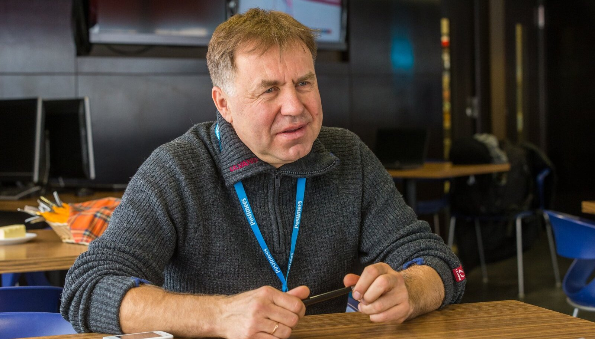

Eesti murdmaasuusakoondis maailmameistrivõistlustel 2021
Vaata lisaks koondise ja muu kohta Eesti suusaliidu kodulehelt! Eesti Suusaliidu koduleht
Koondise peatreeneriks on Jaanus Teppan, kes oli ka ise suusataja ning osales 1992 Albertville'i ja 1994 Lillehammeri olümpiamängudel. Parimateks kohtadeks jäid Albertville'i OM-il 30km klassikatehnikas 31.koht ja Lillehammeri OM-il 50km klassikatehnikas 22.koht. Teppan on lõpetanud 1991. aastal Tartu ülikooli kehakultuuti teaduskonna. Aastatel 2006-2009 oli ta Türgi murdmaasuusakoondise peatreener.
Jaanus Teppan